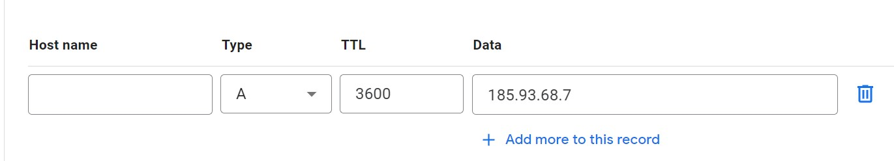
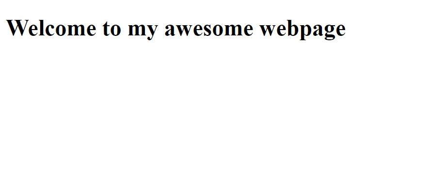

Website Tutorial
This is a quick tutorial for anyone who might want to build their own personal website, which is surprisingly easy and cheap. I'll also explain some basic concepts about how the web actually works. Here is the basic outline of what we will be doing:
- buy a domain name
- rent a web server
- link the domain to your server
- create your website by creating some simple HTML and CSS files
Buy a domain name
A domain is the thing you type in the search bar in your web browser to go to websites. For example, when you write www.google.com, you go to Google, or if you write yigittuncer.net, you get my website. I'll explain this concept better in the IP address section. For now, you need to choose and buy a name for yourself. I recommend using GoDaddy as that's what I used, but any domain name site will do. You can get better prices if you prefer .xyz or .net names instead of .com.
Rent a web server
Now we need to rent a web server. A server is just a computer that sends files to other computers. For example, when you go to google.com, you're actually connecting to a server that sends the page that loads in your browser to your computer. For a more in-depth explanation, you can check out this link. But you don't really need to understand this to build the site. Now for this step, you could rent a VDS (Virtual Dedicated Server), but those are expensive. I recommend renting a web server since they're dirt cheap. I use Rabisu, but you can use any site you want. Just buy the web server pack (like this).
Linking the domain to the server
The web server you purchased has its own IP address, which is a bunch of numbers like 192.01.01.6. This allows other computers to communicate with each other. For example, as of the time I'm writing this, Google's IP address is 142.250.187.142. If you write this in your search bar or click the link, you'll go to google.com. If we didn't have domain names, we would have to memorize these IP addresses each time we wanted to go to a site. But thanks to domain names, we can just remember google.com. So now we want to link the domain name you bought with your IP so other computers know where to go when someone asks for your website. First, you need to get the IP of your website, which should be written on the site you bought it. Then, go to your domain name provider and go to the DNS settings. From there, you want to click on create a new record, then select type A for type, and enter the IP address into the data section.
My personal settings
Coding the website
At this step, if everything went okay, we actually have a website on the web! The only problem is there's nothing on there. We need to now need to create HTML and CSS files for the site. HTML stands for Hyper Text Markup Language, and it's just a language to make text look fancy. You can check out the HTML page for this page here. CSS stands for Cascading Style Sheets, and what it does is it adds style to webpages. So without CSS on this page, you would only see barebones text on a white page. You can see the CSS file for this page here. Explaining what all this means would be out of the scope of this short guide, so I'll link to some useful documents to help you get started with creating your own idea of a webpage:
But for now, just create a file called index with the file extension .html, index.html. We don't need to worry about CSS for now. The index.html file is the first file that opens when you go to a website. For example, when you go to google.com, you'll land on its index.html page. Now open this file with any text editor and copy and paste the following code into it:
<!DOCTYPE html>
<body>
<h1>Welcome to my awesome webpage</h1>
</body>
</html>
Now, save this file and upload it to your server. Open the file manager of your server and put the index.html file under the public_html folder. If you get stuck on this part, just look up how to upload files on whatever server provider you chose during step 2. Now when you load into your site, you should see this:
All that's left to do is style your website to your liking. There is a lot more to learn about web development, but hopefully, this allowed you to create a basic site.